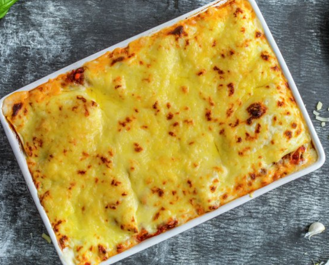

Lasagna

A family favorite cheesy and delicious dish
This recipe combines some kind of meat sauce with cheese, lots of it.
The humble lasagna is composed of several layers of pasta with
aforementioned cheese and sauce in between.
Ingredients:
Meat Sauce
- 400g minced meat
- 2 tablespoons cooking oil
- 1 chopped onion
- 2 finely chopped garlic cloves
- 1 can obliterated tomatos (400g)
- 2 tablespoons of tomato puree
- 1dl water
- 1 tablespoon fresh basil
- 0,5 teaspoon of salt
- 0,5 teaspoon of pepper
Cheesesauce
- 2 tablespoons butter
- 3 tablespoons flour
- 6dl milk (get the extra vitamin D one, yo!)
- 5 tablespoons of parmesan CHEESE
- 1 teaspoon salt
- 0,5 teaspoon churned white pepper
- 0,5 shredded nutmeg
Other
- 9pcs lasagnaplates
- 3dl shredded (you guessed it) cheese for topping
Instructions:
- Split the meat in 2 and brown them separately in a pan
with oil and high heat.
- Put all meat back in pan.
- Add chopped onion, garlic, tomatoes, tomatopuree, and water
- Let meatsauce boil a little for about 10 minutes until
it thicken.s
- Sprinkle basil over dish, add salt and pepper to taste.
- Melt butter in a pot and mix in flour.
- Gradually add milk while stirring and let sauce simmer for
10 minutes. It should be relatively thick.
- Add parmesan and let cheese melt.
- Add spices to taste.
- Layer lasagna-plates, meat sauce, and cheese sauce in
a ceramic cooking tray (What do you americans call this?)
- Start the lasagna with cheese sauce, and end with cheese sauce
- Sprinkle shredded cheese over dish
- Heat oven to 225c and cook dish for 30-40 minutes.
- Let dish rest for a couple of minutes after cooking.
A baguette and salad goes wonderfully along with this dish! Maybe try our recipe for garlic bread?